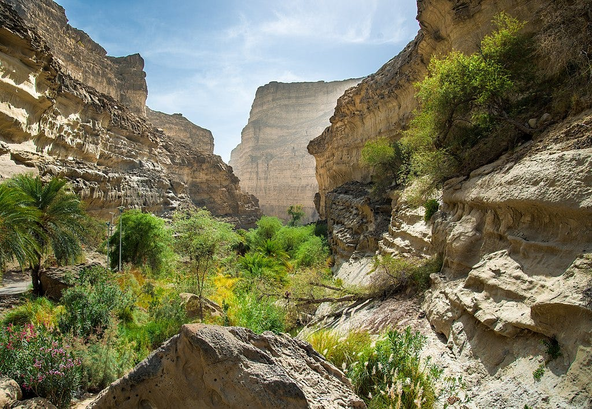

A Comprehensive Guide to Pakistan's National Park
Hingol National Park is a marvel of nature and the largest national park in Pakistan. Located along the Makran coast in Balochistan, it covers an area of approximately 6,100 square kilometers. Established in 1988, the park offers a unique blend of diverse ecosystems, ranging from arid sub-tropical forests and barren mountains to coastal marine environments.
The park is renowned for its surreal landscapes that look like they belong on another planet. The wind and water erosion over millions of years have sculpted the rocks into incredible shapes.
One of the most famous landmarks is the "Princess of Hope," a natural rock formation that resembles a standing woman looking out toward the horizon. It was named by Hollywood actress Angelina Jolie during her visit to Pakistan.
Another geological wonder is a rock formation that bears a striking resemblance to the Great Sphinx of Giza. It sits atop a hill and appears to guard the rugged terrain.
Hingol is home to active mud volcanoes, the most famous being Chandragup. These are not magmatic volcanoes but geological structures formed by the eruption of mud, water, and gases. They are sacred to Hindu pilgrims.
Despite its arid appearance, Hingol National Park supports a rich variety of wildlife, thriving in its three main habitats: marine, estuary, and terrestrial.
The park holds immense cultural value, particularly for the Hindu community. The Hinglaj Mata Mandir (also known as Nani Mandir) is located in a canyon within the park. It is one of the 51 Shakti Peethas and attracts thousands of pilgrims every year for the Hinglaj Yatra.